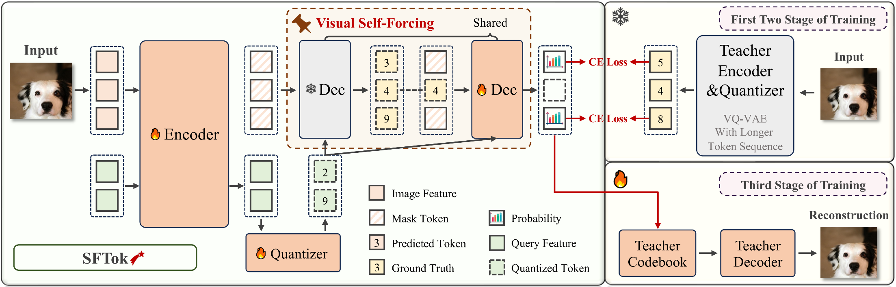
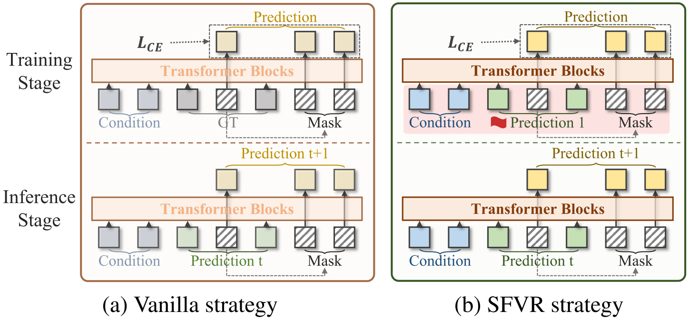
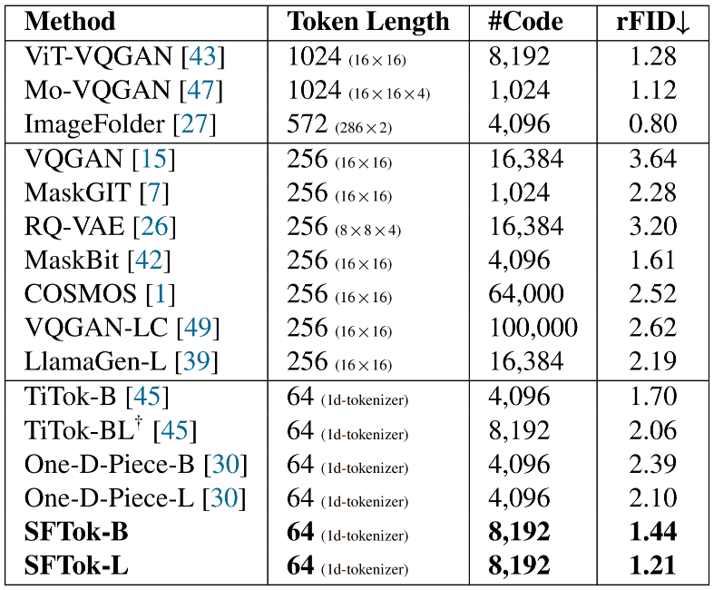
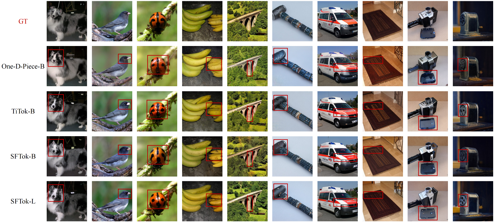
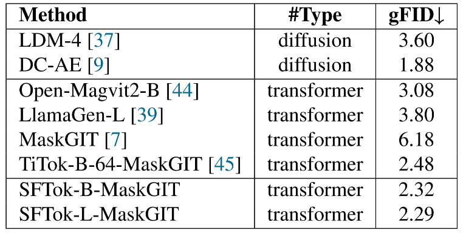
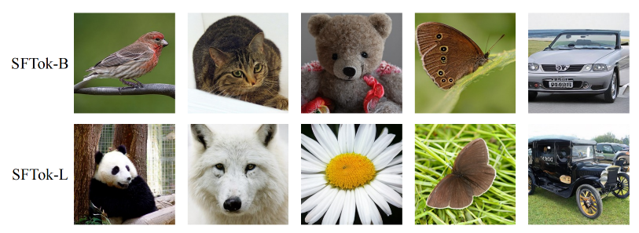
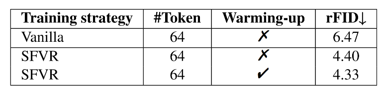
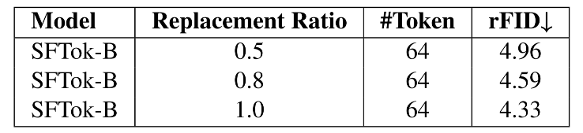
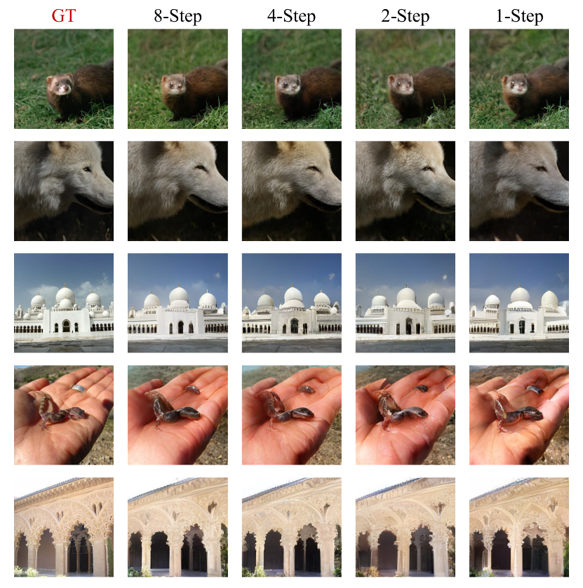
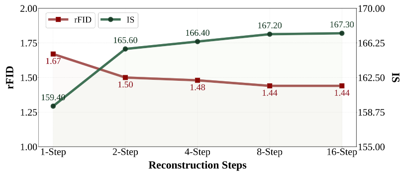

Recent advances in multimodal models highlight the pivotal role of image tokenization in high-resolution image generation. By compressing images into compact latent representations, tokenizers enable generative models to operate in lower-dimensional spaces, thereby improving computational efficiency and reducing complexity. Discrete tokenizers naturally align with the autoregressive paradigm but still lag behind continuous ones, limiting their adoption in multimodal systems. To address this, we propose SFTok, a discrete tokenizer that incorporates a multi-step iterative mechanism for precise reconstruction. By integrating self-forcing guided visual reconstruction and debias-and-fitting training strategy, SFTok resolves the training-inference inconsistency in multi-step process, significantly enhancing image reconstruction quality. At a high compression rate of only \(64\) tokens per image, SFTok achieves state-of-the-art reconstruction quality on ImageNet (rFID = \(1.21\)) and demonstrates exceptional performance in class-to-image generation tasks (gFID = \(2.29\)).

In recent years, image generation models have achieved remarkable achievements, enabling the synthesis of highly realistic images from natural language descriptions and reference images. Leading models, including HunyuanImage 3.0, Seedream 4.0, Nano Banana~\citep{nanobanana}, GPT-Image, and Emu 3.5, have demonstrated the capability to generate complex scenes and artistic images, attracting widespread attention from both academia and industry. To unify image and text generation, researchers have proposed joint training paradigms such as Transfusion, which was further scaled up in subsequent work. However, these hybrid frameworks still combine the diffusion model's \(l_2\) loss with the cross-entropy loss for textual data, which limits their training simplicity and framework generalization. Therefore, we contemplate: can we construct a fully native multimodal unified training paradigm that relies solely on cross-entropy loss? This approach can also benefit from the mature advancements in the auto-regressive domain, such as KV Cache, leading to significant improvements in inference efficiency. Hence, discrete tokenizers need to be re-emphasized as a critical component.
The image tokenizers employed in multimodal models can be broadly categorized into two types: continuous tokenizers and discrete tokenizers. Continuous tokenizers typically model Gaussian distributions, whereas discrete tokenizers, analogous to those used in text generation, model multinomial distributions, making them more naturally aligned with linguistic representations. Due to training instability and higher compression rates, the reconstruction capability of discrete tokenizers is often inferior to that of continuous tokenizers, which greatly limits their application in multimodal model training. To enhance the performance of discrete tokenizers, we draw inspiration from the multi-step iterative denoising process of diffusion models that utilize continuous tokenizers, and seek to adapt this principle to discrete latent spaces. Compared to traditional continuous tokenizers, diffusion models generate images by progressively denoising, gradually reducing the error over multiple iterations. These iterative steps can be regarded as decomposing the direct distribution prediction task into a sequence of conditional distribution prediction tasks. Theoretically, such a formulation tends to achieve lower cross-entropy during prediction. Previous works have also explored similar multi-step iterative mechanisms in discrete spaces, adopting multi-step prediction methods during the training of generative models. In this process, the model iteratively predicts the tokens utilized for generation. However, we observe that directly applying this multi-step iterative mechanism to discrete tokenizers fails to substantially enhance their reconstruction performance. The underlying reason lies in the inconsistency between the training and inference processes, which introduces representational errors and hinders effective knowledge transfer from training to inference. Therefore, ensuring consistency between training and inference in discrete space becomes a critical challenge.
In this paper, we propose SFTok, a novel discrete tokenizer framework that employs multi-step iterative modeling to enhance reconstruction quality. By comparing the predicted distributions with the ground truth at each step, we observe that although the model is trained to align predictions with the ground truth, a noticeable discrepancy persists after convergence. Conventional training paradigms fail to account for this discrepancy, leading to an inconsistency between training and inference processes. To bridge this gap, we introduce a self-forcing guided visual reconstruction (SFVR) strategy and formulate a dedicated debias-and-fitting training scheme. At a high compression rate of 64 tokens per image, SFTok achieves state-of-the-art reconstruction quality on ImageNet (rFID = 1.21) and demonstrates excellent performance in downstream generative tasks (gFID = 2.29). The core contributions of this work are threefold:

We propose that fundamentally addressing training-inference inconsistency requires a mask replacement strategy that accurately simulates the distributional discrepancy between model predictions and ground truth during training. As illustrated in the \(T = 8\) example, at each step \(i\), we first use the current model to predict the masked tokens, obtaining the predictions \(\hat{M}_{\overline{i}}\). We then compare the distribution discrepancies between the predictions at each step \(\hat{m}_{\overline{1}}, \dots, \hat{m}_{\overline{T-1}}\), the ground truth \(M_g\), and the final prediction \(\hat{M}_{\overline{T}}\), along with the prediction’s Top-1 accuracy. The distribution discrepancy is measured by KL divergence. Empirical results reveal a substantial gap between the ground truth \(M_g\) and the final prediction \(\hat{M}_{\overline{T}}\), both in distribution and Top-1 accuracy. This gap is postulated as the fundamental cause of the training-inference inconsistency. Additionally, it is observed that with an increasing number of prediction steps, the distribution discrepancy between \(\hat{M}_i\) and \(\hat{M}_{\overline{T}}\) gradually reduces, concurrent with a rise in Top-1 accuracy. The distribution of \(\hat{M}_{\overline{1}}\) is found to already closely approximate that of \(\hat{M}_{\overline{T}}\).
Based on these observations, we propose a new mask replacement strategy, termed self-forcing guided visual reconstruction (SFVR), to mitigate the training-inference inconsistency. Specifically, rather than replacing some masked tokens with the ground truth \(M_g\), we first perform a forward pass without accumulating gradients, using the model to obtain the prediction \(\hat{M}_{\overline{1}}\) at the first step. Then, we replace some masked tokens with \(\hat{M}_{\overline{1}}\), thereby better simulating the distributional characteristics of the model’s predictions during inference. It is worth noting that, although the ideal replacement strategy would be to use \(\hat{M}_{\overline{N-1}}\) to simulate the generation at the \(N\)-th step, we choose to use \(\hat{M}_{\overline{1}}\) for replacement due to its distribution being already very close to that of the final prediction, offering a more computationally efficient solution. By using the SFVR strategy, the input distributions during training and inference are better aligned, alleviating the training-inference inconsistency and improving the performance of multi-step prediction.
This section outlines the debias-and-fitting training strategy of SFTok, which is composed of three stages: “warming up,” “distribution alignment modeling,” and “fine-tuning.” For both the "warming up" and "distribution alignment modeling" stages, the decoder from MaskGIT is adopted as the pixel prediction head. Mirroring TiTok, the pre-trained MaskGIT is used as a teacher model, from which the SFTok model learns a fitted distribution to bolster training stability and accelerate convergence. The "warming up" stage specifically simulates single-step prediction by replacing no mask tokens, focusing on improving the initial prediction's accuracy. In the “distribution alignment modeling” stage, we introduce the SFVR strategy proposed earlier, replacing some mask tokens with the model’s first-step prediction, thereby enabling multi-step conditional distribution training and prediction, which enhances image reconstruction quality.
After the first two training stages, we optionally proceed with the “fine-tuning” stage to improve the reconstruction quality. In this stage, we freeze the encoder and quantizer of SFTok, and only train the decoder of both SFTok and pretrained MaskGIT towards pixel space using the typical VQGAN training approach. We observe that this debias-and-fitting training strategy significantly improves training stability and reconstructed image quality, as demonstrated by the experimental results.

We perform a comparative evaluation of our SFTok model against state-of-the-art discrete tokenizers on the ImageNet dataset. Evaluations on the validation set employs rFID. As shown, SFTok-B and SFTok-L achieve rFID scores of 1.44 and 1.21, respectively, in 8-step reconstruction when compressing images to only 64 tokens. These results establish a new state-of-the-art in reconstruction quality at the present compression rate. Notably, SFTok-L outperforms many models with relatively lower compression rates, underscoring the efficiency of our approach.

For visualization, we compare several high-performance methods for compressing images to 64 tokens. The results are shown in the table above, further demonstrating the superiority of SFTok. As highlighted in the red boxes, SFTok preserves fine-grained details in complex textures more effectively than alternative methods.


We evaluate the image generation performance of SFTok using the MaskGIT paradigm. However, in contrast to the MaskGIT method, we utilize the SFTok-B and SFTok-L models, which are trained via the debias-and-fitting strategy, as discrete tokenizers. The generative model generates different token sequences based on different class labels, and the sequences are subsequently converted into images through the SFTok decoder. As shown in the table, both SFTok-B and SFTok-L-based generation models outperform MaskGIT and all other transformer-based generation models listed in the table in terms of gFID. Additionally, SFTok demonstrates superior performance compared to diffusion-based generation models. Furthermore, the qualitative results of the generated images, as presented above, highlight SFTok’s remarkable ability to preserve fine-grained details and textures.

We begin our analysis by investigating the impact of the proposed self-forcing guided visual reconstruction (SFVR) strategy and evaluating the effectiveness of the warming-up procedure. In addition to SFTok-B, we train two separate ablation models on ImageNet: one using the baseline replacement strategy and the other employing our proposed approach. For both models, all configurations are maintained identical, except for the inclusion or exclusion of the warming-up phase. As demonstrated in the table, the SFVR strategy results in a significant improvement in reconstruction quality compared to the vanilla method. Moreover, the inclusion of the warming-up procedure further enhances the overall performance of the model, providing additional evidence of its importance for training.

We further investigate the effect of different mask replacement ratios during training on the model’s performance. To this end, we conduct experiments with three distinct mask replacement ratios: 0.5, 0.8, and 1.0, while keeping all other training settings consistent with those of the SFTok-B configuration. As shown in the table, the results indicate that a replacement ratio of 1.0 yields the best reconstruction quality. This suggests that fully simulating the distribution encountered during inference during the training phase significantly enhances model performance.


We evaluate the image reconstruction performance of SFTok across different numbers of inference steps using a multi-step prediction strategy. In this approach, the model iteratively predicts the masked tokens conditioned on the unmasked ones, progressively updating the tokens with the predicted values. As shown in the figure above, we conduct an ablation experiment using the SFTok-B model, which has undergone the debias-and-fitting training process, and evaluate its performance based on two quantitative metrics: rFID and IS. As the number of inference steps increases from 1 to 8, the reconstruction quality improves significantly, demonstrating the effectiveness of the multi-step prediction strategy. Furthermore, we present visualizations of the reconstruction results for different step numbers. As shown in above, with an increasing number of inference steps, the details in the image become more refined, and the perceptual quality is enhanced.